Learning Module 15 Credit Analysis for Government Issuers - Part 1: Introduction
Volume 6: Fixed Income
Learning Module 15 Credit Analysis for Government Issuers
Part 1/2: Introduction (PDF Pages 393–408)
Tập 6: Thu nhập Cố định (Fixed Income)
Học phần 15: Phân tích Tín dụng đối với Tổ chức Phát hành Chính phủ (Credit Analysis for Government Issuers)
Phần 1/2: Giới thiệu (Trang PDF 393–408)
L E A R N I N G M O D U L E
H Ọ C P H Ầ N
15
15
Credit Analysis for Government Issuers
Phân tích Tín dụng đối với Tổ chức Phát hành Chính phủ (Credit Analysis for Government Issuers)
LEARNING OUTCOMES
KẾT QUẢ HỌC TẬP (LEARNING OUTCOMES)
Mastery The candidate should be able to: explain special considerations when evaluating the credit of sovereign and non-sovereign government debt issuers and issues
Thành thạo – Ứng viên cần có khả năng: - giải thích những lưu ý đặc biệt khi đánh giá tín dụng của các tổ chức phát hành và các đợt phát hành nợ chính phủ có chủ quyền (sovereign) và phi chủ quyền (non-sovereign)
INTRODUCTION
GIỚI THIỆU (INTRODUCTION)
1
1
This learning module explores special considerations for the credit evaluation of sovereign and other public issuers that often access fixed-income markets to finance their activities.
Học phần này khám phá những lưu ý đặc biệt đối với việc đánh giá tín dụng của các tổ chức phát hành chính phủ có chủ quyền (sovereign) và các tổ chức phát hành khu vực công khác thường xuyên tiếp cận thị trường thu nhập cố định để tài trợ cho các hoạt động của mình.
A major difference between corporate and sovereign issuers is the use of proceeds and source of repayment of debt obligations. In contrast to corporations that fund working capital and fixed assets to generate profits, sovereign and other government issuers use debt to conduct fiscal policy, supply public goods and services, and fund other government expenditures. While companies primarily rely on operating cash flow to repay debt, governments use tax revenues and other government revenues, such as tariffs and fees, to pay interest and principal.
Sự khác biệt lớn giữa tổ chức phát hành doanh nghiệp và chính phủ có chủ quyền là mục đích sử dụng vốn thu được (use of proceeds) và nguồn trả nợ (source of repayment) đối với các nghĩa vụ nợ. Ngược lại với các doanh nghiệp vốn tài trợ cho vốn lưu động và tài sản cố định nhằm tạo ra lợi nhuận, các tổ chức phát hành chính phủ có chủ quyền và chính quyền các cấp khác sử dụng nợ để thực hiện chính sách tài khóa (fiscal policy), cung cấp hàng hóa và dịch vụ công cộng (public goods and services), và tài trợ cho các khoản chi tiêu khác của chính phủ. Trong khi các công ty chủ yếu dựa vào dòng tiền hoạt động để trả nợ, các chính phủ sử dụng nguồn thu thuế (tax revenues) và các khoản thu khác của chính phủ, chẳng hạn như thuế quan (tariffs) và phí (fees), để thanh toán tiền lãi và nợ gốc.
We analyze sovereign bonds using a combination of qualitative and quantitative factors to assess their ability and willingness to pay. Sovereign defaults are not uncommon, particularly as countries transition from emerging to advanced economies. However, in contrast to corporate issuers, sovereign bondholders are generally unable to force governments to declare bankruptcy and liquidate assets. Non-sovereign issuers, such as certain local governments or quasi-government entities, also issue debt to finance their expenditures or develop infrastructure. This debt is backed by their ability to levy local taxes or generate specific project revenue.
Chúng ta phân tích trái phiếu chính phủ bằng cách sử dụng sự kết hợp của các yếu tố định tính và định lượng nhằm đánh giá khả năng (ability) và thiện chí (willingness) trả nợ của họ. Các vụ vỡ nợ của chính phủ có chủ quyền (sovereign defaults) không phải là hiếm gặp, đặc biệt khi các quốc gia chuyển đổi từ nền kinh tế mới nổi sang nền kinh tế phát triển. Tuy nhiên, ngược lại với các tổ chức phát hành doanh nghiệp, các trái chủ nắm giữ trái phiếu chính phủ nhìn chung không thể buộc các chính phủ tuyên bố phá sản và thanh lý tài sản. Các tổ chức phát hành phi chủ quyền (non-sovereign issuers), chẳng hạn như một số chính quyền địa phương hoặc các tổ chức bán chính phủ (quasi-government entities), cũng phát hành nợ để tài trợ cho các khoản chi tiêu hoặc phát triển cơ sở hạ tầng của họ. Khoản nợ này được bảo đảm bằng khả năng đánh thuế địa phương hoặc tạo ra doanh thu từ dự án cụ thể của họ.
LEARNING MODULE OVERVIEW
TỔNG QUAN HỌC PHẦN (LEARNING MODULE OVERVIEW)
- Governments borrow in public markets to conduct fiscal policy and meet budgetary needs, such as the provision of public goods.
- Các chính phủ vay vốn trên các thị trường đại chúng để thực hiện chính sách tài khóa và đáp ứng các nhu cầu ngân sách, chẳng hạn như việc cung cấp hàng hóa công cộng (public goods).
-
A sovereign government’s ability to tax private economic activity causes these bonds to normally have the lowest credit risk of any issuer in a specific country. In advanced economies, sovereign debt is often considered default risk-free.
-
A combination of qualitative and quantitative factors is used to analyze a sovereign issuer’s ability and willingness to pay.
-
Greater central bank independence from the sovereign issuing entity reduces the likelihood that a national government will simply increase the money supply by purchasing domestic debt.
-
A key distinction for sovereign creditworthiness is whether its domestic currency is considered to be a reserve currency, that is, one that is fully convertible and held by foreign central banks and other investors.
-
Non-sovereign government debt is issued by local governments or quasi-government entities, backed by their tax revenue or specific project revenue.
-
The credit analysis of non-sovereign debt backed by tax revenue has similar considerations to sovereign bonds, while project-based revenue bonds are typically evaluated based upon the cash flows associated with the underlying project.
-
Khả năng đánh thuế lên các hoạt động kinh tế tư nhân của chính phủ có chủ quyền khiến cho các trái phiếu này thông thường có rủi ro tín dụng thấp nhất so với bất kỳ tổ chức phát hành nào trong một quốc gia cụ thể. Tại các nền kinh tế phát triển, nợ chính phủ thường được coi là phi rủi ro vỡ nợ (default risk-free).
-
Sự kết hợp giữa các yếu tố định tính và định lượng được sử dụng để phân tích khả năng trả nợ (ability to pay) và thiện chí trả nợ (willingness to pay) của một tổ chức phát hành chính phủ có chủ quyền.
-
Tính độc lập cao hơn của ngân hàng trung ương (central bank independence) khỏi tổ chức phát hành là chính phủ làm giảm khả năng chính phủ quốc gia sẽ chỉ đơn thuần tăng cung tiền bằng cách mua lại nợ trong nước (monetize domestic debt).
-
Một điểm phân biệt then chốt đối với mức độ tín nhiệm của chính phủ có chủ quyền là liệu đồng nội tệ của quốc gia đó có được coi là một đồng tiền dự trữ (reserve currency) hay không, tức là một đồng tiền có khả năng chuyển đổi hoàn toàn (fully convertible) và được nắm giữ bởi các ngân hàng trung ương nước ngoài cùng các nhà đầu tư khác.
-
Nợ chính phủ phi chủ quyền (non-sovereign government debt) được phát hành bởi các chính quyền địa phương hoặc các tổ chức bán chính phủ, được bảo đảm bằng nguồn thu thuế của họ hoặc doanh thu từ dự án cụ thể.
-
Việc phân tích tín dụng đối với nợ phi chủ quyền được bảo đảm bằng nguồn thu thuế có những lưu ý tương tự như trái phiếu chính phủ có chủ quyền, trong khi trái phiếu doanh thu dựa trên dự án (project-based revenue bonds) thường được đánh giá dựa trên các dòng tiền gắn liền với dự án cơ sở đó.
LEARNING MODULE SELF-ASSESSMENT
TỰ ĐÁNH GIÁ HỌC PHẦN (LEARNING MODULE SELF-ASSESSMENT)
These initial questions are intended to help you gauge your current level of understanding of this learning module.
Các câu hỏi mở đầu này nhằm giúp bạn tự đánh giá mức độ hiểu biết hiện tại của mình về học phần này.
- Identify the debt type that corresponds to the correct example:
- A) sovereign debt, B) non-sovereign debt, C) corporate debt
- Issued by an entity backed by cash flow from its business operations 2. Issued by a country’s government, backed by its ability and willingness to tax 3. Issued by a local government or entity, backed by its ability and willingness to tax, or revenue from a specific public project
- Xác định loại nợ tương ứng với ví dụ đúng:
- A) nợ chính phủ có chủ quyền (sovereign debt), B) nợ phi chủ quyền (non-sovereign debt), C) nợ doanh nghiệp (corporate debt)
- Được phát hành bởi một đơn vị và được bảo đảm bằng dòng tiền từ hoạt động kinh doanh của đơn vị đó
- Được phát hành bởi chính phủ của một quốc gia, được bảo đảm bằng khả năng và thiện chí đánh thuế của chính phủ đó
- Được phát hành bởi một chính quyền hoặc tổ chức địa phương, được bảo đảm bằng khả năng và thiện chí đánh thuế của họ, hoặc doanh thu từ một dự án công cụ thể
Solution:
Lời giải:
-
C is correct. Corporate debt is issued by non-government corporations to finance business operations, and payments are made from operating cash flow.
-
A is correct. Sovereign debt is issued by national governments to conduct fiscal policy and finance their budgets. This debt is paid based on the government’s ability and willingness to collect taxes from within a jurisdiction.
-
B is correct. Non-sovereign debt is issued by sub-sovereign or local governments and related entities. These bonds are supported by the local taxing authority of the issuer or specific public project revenue.
-
C là đáp án đúng. Nợ doanh nghiệp (corporate debt) được phát hành bởi các doanh nghiệp phi chính phủ để tài trợ cho hoạt động kinh doanh, và các khoản thanh toán được thực hiện từ dòng tiền hoạt động.
-
A là đáp án đúng. Nợ chính phủ có chủ quyền (sovereign debt) được phát hành bởi các chính phủ quốc gia để thực hiện chính sách tài khóa và tài trợ cho ngân sách của họ. Khoản nợ này được thanh toán dựa trên khả năng và thiện chí thu thuế của chính phủ trong phạm vi một khu vực tài phán.
-
B là đáp án đúng. Nợ phi chủ quyền (non-sovereign debt) được phát hành bởi các chính quyền cấp dưới quốc gia (sub-sovereign) hoặc địa phương và các tổ chức liên quan. Các trái phiếu này được hỗ trợ bởi thẩm quyền đánh thuế địa phương của tổ chức phát hành hoặc doanh thu từ dự án công cụ thể.
| 2. The principle of sovereign immunity is related to the sovereign government’s: |
|---|
| A.ability to pay. |
| B.ability to tax. |
| C.willingness to pay. Solution: |
| C is correct. Under the principle of sovereign immunity, national laws limit investors’ ability to force a sovereign government into bankruptcy or liquidate its assets to settle debt claims as would be the case for a corporate issuer. |
| 3. The creditworthiness of sovereign and other government borrowers is based upon qualitative and quantitative factors. Which of the following is_not_a quantitative factor? |
| A.External stability |
| B.Economic growth and flexibility |
| l C.Fiscal strength Solution: |
| B is correct. The quantitative factor is actually economic growth and stabili- ty, not flexibility. |
| 4. Which of the following statements best describes characteristics of external strength associated with higher credit quality? |
| A.A government that is able to impose and enforce capital controls |
| B.A government that has established free trade agreements with neigh- boring countries |
| C.A government whose central bank issues a reserve currency Solution: |
| C is correct. A key distinction for sovereign creditworthiness is whether |
| its domestic currency is considered to be a reserve currency, fully convert- ible and frequently held by foreign central banks and other investors. A is |
incorrect as capital controls may not support debt capacity. B is incorrect fi |
| since free trade is a necessary, but not a sufficient, condition for establishing external strength. |
- Nguyên tắc miễn trừ chủ quyền (principle of sovereign immunity) có liên quan đến yếu tố nào của chính phủ có chủ quyền:
-
A. khả năng trả nợ (ability to pay).
-
B. khả năng đánh thuế (ability to tax).
-
C. thiện chí trả nợ (willingness to pay).
-
Lời giải:
C là đáp án đúng. Theo nguyên tắc miễn trừ chủ quyền (sovereign immunity), luật pháp quốc gia giới hạn khả năng của các nhà đầu tư trong việc buộc một chính phủ có chủ quyền phải phá sản hoặc thanh lý tài sản của mình để giải quyết các quyền đòi nợ như trường hợp đối với một tổ chức phát hành doanh nghiệp.
- Match the following debt issuances to the correct issuer type:
- Mức độ tín nhiệm của các bên đi vay là chính phủ có chủ quyền và chính quyền khác dựa trên các yếu tố định tính và định lượng. Yếu tố nào sau đây không phải là một yếu tố định lượng?
-
A. Sự ổn định đối ngoại (External stability)
-
B. Tăng trưởng và sự linh hoạt kinh tế (Economic growth and flexibility)
-
C. Sức mạnh tài khóa (Fiscal strength)
-
Lời giải:
B là đáp án đúng. Yếu tố định lượng thực chất là tăng trưởng và sự ổn định kinh tế (economic growth and stability), chứ không phải sự linh hoạt (flexibility).
A) agency bonds, B) general obligation bonds, C) revenue bonds
- Phát biểu nào sau đây mô tả đúng nhất các đặc điểm của sức mạnh đối ngoại (external strength) gắn liền với chất lượng tín dụng cao hơn?
-
A. Một chính phủ có khả năng áp đặt và thực thi các biện pháp kiểm soát vốn (capital controls)
-
B. Một chính phủ đã thiết lập các hiệp định thương mại tự do với các quốc gia láng giềng
-
C. Một chính phủ có ngân hàng trung ương phát hành đồng tiền dự trữ (reserve currency)
-
Lời giải:
C là đáp án đúng. Một điểm phân biệt then chốt đối với mức độ tín nhiệm của chính phủ có chủ quyền là liệu đồng nội tệ của quốc gia đó có được coi là một đồng tiền dự trữ hay không, tức có khả năng chuyển đổi hoàn toàn và thường xuyên được nắm giữ bởi các ngân hàng trung ương nước ngoài cùng các nhà đầu tư khác. A sai vì các biện pháp kiểm soát vốn có thể không hỗ trợ cho năng lực trả nợ. B sai vì thương mại tự do là điều kiện cần nhưng chưa phải là điều kiện đủ để thiết lập sức mạnh đối ngoại.
- Hãy ghép nối các đợt phát hành nợ sau đây với đúng loại hình tổ chức phát hành:
| 1. Bonds issued for building a regional highwaytoll road |
|---|
| 2. Bonds issued by the national mortgage finance corporation, under national law. |
| 3. Bonds issued by a state govern- ment to fund apension deficit |
A) trái phiếu cơ quan đại diện chính phủ (agency bonds), B) trái phiếu nghĩa vụ chung (general obligation bonds), C) trái phiếu doanh thu (revenue bonds)
| Đợt phát hành nợ |
|---|
| 1. Trái phiếu được phát hành để xây dựng một tuyến đường cao tốc thu phí cấp vùng (regional highway toll road) |
| 2. Trái phiếu được phát hành bởi tổng công ty tài chính thế chấp quốc gia (national mortgage finance corporation), theo luật quốc gia. |
| 3. Trái phiếu được phát hành bởi chính quyền bang để tài trợ cho khoản thâm hụt quỹ hưu trí (pension deficit) |
Solution:
Lời giải:
- C is correct. Revenue bonds are issued to finance a specific public benefit project, mostly supported by the local/regional government. The revenue
- C là đáp án đúng. Trái phiếu doanh thu (revenue bonds) được phát hành để tài trợ cho một dự án lợi ích công cộng cụ thể, chủ yếu được hỗ trợ bởi chính quyền địa phương/vùng. Doanh thu
from the project supported by the economic base for utilization of the project determines its credit worthiness.
-
A is correct. Agencies are quasi-government entities whose primary activities are to fulfill a government-sponsored mission to provide public services that are often based upon a specific sovereign law or statute. In many cases, either the law or statute creating the entity authorizes it to finance its activities using debt.
-
B is correct. General obligation (GO) bonds are unsecured bonds backed by the general revenues of the issuing non-sovereign government. These bonds are supported by the taxing authority of the issuer, rather than the revenue from a specific project.
-
Which of the following is a relevant qualitative factor for assessing the sovereign rating for a country’s debt issue?
- A. Natural resources
từ dự án được hỗ trợ bởi nền tảng kinh tế cho việc khai thác sử dụng dự án đó sẽ quyết định mức độ tín nhiệm của nó.
B. Trading partnership with a strong economy
-
A là đáp án đúng. Các cơ quan đại diện (agencies) là các tổ chức bán chính phủ (quasi-government entities) có hoạt động chính là thực hiện một sứ mệnh do chính phủ bảo trợ nhằm cung cấp các dịch vụ công vốn thường dựa trên một đạo luật hoặc quy chế quốc gia cụ thể. Trong nhiều trường hợp, đạo luật hoặc quy chế thành lập tổ chức đó cho phép nó tài trợ cho các hoạt động của mình bằng cách sử dụng nợ vay.
-
B là đáp án đúng. Trái phiếu nghĩa vụ chung (General obligation – GO bonds) là các trái phiếu không có bảo đảm được hậu thuẫn bởi các nguồn thu chung của chính quyền phi chủ quyền phát hành. Các trái phiếu này được hỗ trợ bởi thẩm quyền đánh thuế của tổ chức phát hành, thay vì doanh thu từ một dự án cụ thể.
-
Yếu tố nào sau đây là một yếu tố định tính có liên quan để đánh giá xếp hạng tín nhiệm chính phủ đối với đợt phát hành nợ của một quốc gia?
-
A. Tài nguyên thiên nhiên (Natural resources)
-
B. Quan hệ đối tác thương mại với một nền kinh tế mạnh (Trading partnership with a strong economy)
-
C. Sự đa dạng hóa kinh tế (Economic diversification)
-
Lời giải:
-
C. Economic diversification
-
Solution:
C is correct. One of the key factors for assessing the creditworthiness of a sovereign issuer’s debt is the degree of economic diversification, as well as growth potential. The economies in countries with the highest-rated sovereign borrowers typically have an advanced and highly diversified domestic economy with strong, sustainable growth prospects. Emerging or frontier market economies, on the other hand, often depend upon a single industry or commodity and/or fewer trading partners, causing the tax revenues available to these sovereign borrowers to be more susceptible to an economic downturn, key commodity price fluctuations, and/or trade interruptions.
C là đáp án đúng. Một trong những yếu tố then chốt để đánh giá mức độ tín nhiệm đối với khoản nợ của một tổ chức phát hành chính phủ là mức độ đa dạng hóa kinh tế, cũng như tiềm năng tăng trưởng. Nền kinh tế tại các quốc gia có bên đi vay chính phủ được xếp hạng cao nhất thường có nền kinh tế trong nước tiên tiến và đa dạng hóa cao với triển vọng tăng trưởng mạnh mẽ, bền vững. Mặt khác, các nền kinh tế thị trường mới nổi hoặc cận biên (emerging or frontier market economies) thường phụ thuộc vào một ngành công nghiệp hoặc hàng hóa cơ bản duy nhất và/hoặc có ít đối tác thương mại hơn, khiến cho nguồn thu thuế sẵn có đối với các bên đi vay chính phủ này dễ bị tổn thương hơn trước suy thoái kinh tế, biến động giá hàng hóa cơ bản chủ chốt, và/hoặc sự gián đoạn thương mại.
2
2
SOVEREIGN CREDIT ANALYSIS
PHÂN TÍCH TÍN DỤNG CHÍNH PHỦ CÓ CHỦ QUYỀN (SOVEREIGN CREDIT ANALYSIS)
explain special considerations when evaluating the credit of sovereign and non-sovereign government debt issuers and issues
giải thích những lưu ý đặc biệt khi đánh giá tín dụng của các tổ chức phát hành và các đợt phát hành nợ chính phủ có chủ quyền (sovereign) và phi chủ quyền (non-sovereign)
As outlined in earlier lessons, both sovereign and non-sovereign governments issue debt to finance their activities. In contrast to corporate debt, this debt is used to conduct fiscal policy and meet budgetary needs, such as providing public goods and services including infrastructure, health care, and education. The primary source of repayment for sovereign debt is usually taxes and other government revenue, which can include fees, tariffs, and in some cases the profits of state-owned enterprises. A sovereign government’s ability to tax all private economic activity under its jurisdiction is the primary reason why such bonds usually have the lowest credit risk of any issuer within a specific country. While sovereign bonds in the most advanced economies are often considered default risk-free, those issued by emerging and frontier market governments involve greater default risk.
Như đã phác thảo trong các bài học trước, cả chính phủ có chủ quyền và chính quyền phi chủ quyền đều phát hành nợ để tài trợ cho các hoạt động của mình. Ngược lại với nợ doanh nghiệp, khoản nợ này được sử dụng để thực hiện chính sách tài khóa và đáp ứng các nhu cầu ngân sách, chẳng hạn như cung cấp hàng hóa và dịch vụ công cộng bao gồm cơ sở hạ tầng, y tế và giáo dục. Nguồn trả nợ chính đối với nợ chính phủ có chủ quyền thường là thuế và các khoản thu khác của chính phủ, có thể bao gồm phí, thuế quan, và trong một số trường hợp là lợi nhuận của các doanh nghiệp nhà nước (state-owned enterprises). Khả năng đánh thuế lên tất cả các hoạt động kinh tế tư nhân thuộc khu vực tài phán của một chính phủ có chủ quyền là lý do chính giải thích tại sao những trái phiếu như vậy thường có rủi ro tín dụng thấp nhất so với bất kỳ tổ chức phát hành nào trong một quốc gia cụ thể. Mặc dù trái phiếu chính phủ tại các nền kinh tế tiên tiến nhất thường được coi là phi rủi ro vỡ nợ, nhưng những trái phiếu được phát hành bởi chính phủ tại các thị trường mới nổi và cận biên lại hàm chứa rủi ro vỡ nợ lớn hơn.
Bond investors evaluate the creditworthiness of both corporate and public issuers by the stability and predictability of issuer cash flows, the sufficiency of those cash flows to meet required interest and principal payments, and the issuer’s relative reliance
Các nhà đầu tư trái phiếu đánh giá mức độ tín nhiệm của cả tổ chức phát hành doanh nghiệp và khu vực công thông qua tính ổn định và khả năng dự báo của dòng tiền tổ chức phát hành, sự đầy đủ của các dòng tiền đó để đáp ứng các khoản thanh toán tiền lãi và nợ gốc bắt buộc, và mức độ phụ thuộc tương đối của tổ chức phát hành
on debt financing versus other available resources. The creditworthiness of sovereign and other government borrowers is based upon qualitative and quantitative factors unique to the public sector, as shown in the following sections.
vào việc tài trợ bằng nợ so với các nguồn lực sẵn có khác. Mức độ tín nhiệm của các bên đi vay là chính phủ có chủ quyền và chính quyền khác dựa trên các yếu tố định tính và định lượng đặc thù của khu vực công, như được trình bày trong các phần tiếp theo.
Qualitative Factors
Các Yếu tố Định tính (Qualitative Factors)
Sovereign government policies affecting the macroeconomy and financial markets include monetary and fiscal policies that typically seek to create an economic environment with positive, stable growth and stable, low inflation. Domestic and foreign investors evaluate the creditworthiness of a sovereign issuer by considering a government’s taxation and spending policies and the underlying economy as a primary source of tax revenue for repayment. Qualitative factors included in this assessment are shown in Exhibit 1.
Các chính sách của chính phủ có chủ quyền ảnh hưởng đến nền kinh tế vĩ mô và các thị trường tài chính bao gồm các chính sách tiền tệ và tài khóa vốn thường tìm cách tạo ra một môi trường kinh tế có mức tăng trưởng dương, ổn định và lạm phát thấp, ổn định. Các nhà đầu tư trong và ngoài nước đánh giá mức độ tín nhiệm của một tổ chức phát hành chính phủ bằng cách xem xét các chính sách thuế và chi tiêu của chính phủ cũng như nền kinh tế cơ sở với tư cách là nguồn thu thuế chính để trả nợ. Các yếu tố định tính được đưa vào đánh giá này được trình bày trong Bảng minh họa 1.
Exhibit 1: Qualitative Factors in Sovereign Creditworthiness
Bảng minh họa 1: Các Yếu tố Định tính trong Đánh giá Mức độ Tín nhiệm Chính phủ (Qualitative Factors in Sovereign Creditworthiness)
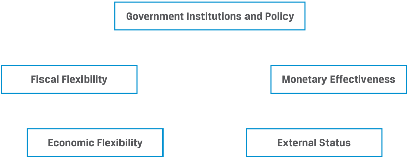
Chú thích hình ảnh: 5 nhóm yếu tố định tính trong đánh giá mức độ tín nhiệm chính phủ: - Thể chế và Chính sách Chính phủ (Government Institutions and Policy) - Sự linh hoạt Tài khóa (Fiscal Flexibility) - Tính hiệu quả Tiền tệ (Monetary Effectiveness) - Sự linh hoạt Kinh tế (Economic Flexibility) - Vị thế Đối ngoại (External Status)
Government Institutions & Policy: This factor addresses the role of sovereign gov- ernment institutions and policies in fostering political and economic stability. From an economic standpoint, these policies range from basic legal protections, such as maintaining the rule of law and the enforcement of property rights, to promoting a culture of debt repayment, transparency, the consistency of financial data reporting, and the relative ease of doing business within a jurisdiction. Political factors include stability of domestic political institutions and the absence of conflict with neighboring countries. These factors are often captured using a relative ranking or scoring approach.
Thể chế & Chính sách Chính phủ (Government Institutions & Policy): Yếu tố này đề cập đến vai trò của các thể chế và chính sách của chính phủ có chủ quyền trong việc thúc đẩy sự ổn định chính trị và kinh tế. Dưới góc độ kinh tế, các chính sách này trải dài từ những sự bảo vệ pháp lý cơ bản, chẳng hạn như duy trì thượng tôn pháp luật (rule of law) và thực thi quyền sở hữu tài sản (property rights), cho đến việc thúc đẩy văn hóa trả nợ, tính minh bạch, tính nhất quán trong việc báo cáo dữ liệu tài chính, và mức độ thuận lợi tương đối trong kinh doanh (ease of doing business) trong một khu vực tài phán. Các yếu tố chính trị bao gồm sự ổn định của các thể chế chính trị trong nước và việc không có xung đột với các quốc gia láng giềng. Những yếu tố này thường được nắm bắt bằng cách sử dụng phương pháp xếp hạng hoặc chấm điểm tương đối.
In addition to a sovereign government’s ability to pay, we must also consider its willingness to pay. Willingness to pay is important for sovereign issuers because of the principle of sovereign immunity , under which investors face limitations in forcing a sovereign government to declare bankruptcy or liquidate its assets to settle debt claims as would be the case for a corporate issuer. Sovereign immunity limits the legal recourse of bondholders in many instances, preventing external creditors from fully enforcing debt claims. In most cases, given the involvement of multiple lenders and multilateral agencies such as the International Monetary Fund (IMF), investors agree to restructure debt to provide extended terms and/or favorable interest rates for a specified period to recover their investment, as in the following example.
Ngoài khả năng trả nợ (ability to pay) của một chính phủ có chủ quyền, chúng ta còn phải xem xét thiện chí trả nợ (willingness to pay) của họ. Thiện chí trả nợ rất quan trọng đối với các tổ chức phát hành chính phủ vì nguyên tắc miễn trừ chủ quyền (sovereign immunity), theo đó các nhà đầu tư gặp phải những hạn chế trong việc buộc một chính phủ có chủ quyền phải tuyên bố phá sản hoặc thanh lý tài sản để giải quyết các quyền đòi nợ như trường hợp đối với một tổ chức phát hành doanh nghiệp. Quyền miễn trừ chủ quyền giới hạn quyền truy đòi pháp lý (legal recourse) của các trái chủ trong nhiều trường hợp, ngăn cản các chủ nợ nước ngoài thực thi đầy đủ các quyền đòi nợ. Trong hầu hết các trường hợp, với sự tham gia của nhiều bên cho vay và các tổ chức đa phương như Quỹ Tiền tệ Quốc tế (IMF), các nhà đầu tư đồng ý tái cơ cấu nợ (restructure debt) nhằm gia hạn kỳ hạn và/hoặc áp dụng mức lãi suất ưu đãi trong một khoảng thời gian xác định để thu hồi khoản đầu tư của mình, như trong ví dụ sau đây.
EXAMPLE 1
VÍ DỤ 1
Uruguay’s 2003 Sovereign Debt Exchange
Đợt Hoán đổi Nợ Chính phủ năm 2003 của Uruguay (Uruguay’s 2003 Sovereign Debt Exchange)
After years of economic stagnation compounded by a banking crisis resulting from large deposit withdrawals first by neighboring Argentines and then by its own residents, Uruguay was forced to float its currency in June 2002. This caused a large depreciation of the Uruguayan peso (UYI) which, together with the fiscal cost of the banking crisis, led to a sharp rise in debt that pushed the country to the brink of default. With the support of the IMF, in March 2003 the authorities announced their intention to carry out a market-friendly debt restructuring to moderate short-term liquidity pressures and improve the medium-term servicing profile of foreign currency-denominated sovereign debt. A debt exchange to extend Uruguay’s bond maturities by five years was successfully agreed to in May 2003 with the consent of 90% of bondholders. Although the transaction was voluntary, it was deemed by analysts to be a default in substance given a lack of sufficient bondholder compensation for the delayed debt payment as well as the subordination of bondholders who did not participate in the exchange.
Sau nhiều năm trì trệ kinh tế trầm trọng hơn bởi cuộc khủng hoảng ngân hàng bắt nguồn từ các đợt rút tiền gửi quy mô lớn, ban đầu là của người dân nước láng giềng Argentina và sau đó là của chính cư dân trong nước, Uruguay đã buộc phải thả nổi đồng tiền của mình vào tháng 6 năm 2002. Điều này đã gây ra sự mất giá lớn của đồng peso Uruguay (UYI), kết hợp với chi phí tài khóa của cuộc khủng hoảng ngân hàng, đã dẫn đến sự gia tăng mạnh mẽ của nợ công và đẩy đất nước đến bờ vực vỡ nợ. Với sự hỗ trợ của IMF, vào tháng 3 năm 2003, các nhà chức trách đã công bố ý định thực hiện một đợt tái cơ cấu nợ thân thiện với thị trường (market-friendly debt restructuring) nhằm làm dịu áp lực thanh khoản ngắn hạn và cải thiện hồ sơ trả nợ trung hạn đối với các khoản nợ chính phủ định danh bằng ngoại tệ. Một đợt hoán đổi nợ (debt exchange) nhằm kéo dài kỳ hạn trái phiếu của Uruguay thêm 5 năm đã được thông qua thành công vào tháng 5 năm 2003 với sự đồng thuận của 90% trái chủ. Mặc dù giao dịch này mang tính tự nguyện, nó vẫn được các nhà phân tích coi là một vụ vỡ nợ về mặt bản chất (default in substance) do thiếu sự đền bù thỏa đáng cho trái chủ đối với việc trì hoãn thanh toán nợ cũng như việc hạ thứ tự ưu tiên thanh toán (subordination) đối với những trái chủ không tham gia vào đợt hoán đổi.
Fiscal Flexibility: Sovereign governments are also evaluated on how well they estab- lish and maintain fiscal discipline over time and under different economic conditions. The management of public finances extends from the enforceability of tax collection to the prudent allocation of government budget expenditures on public goods to managing sovereign debt outstanding relative to economic activity. This assessment is based upon past experience in adjusting spending over economic cycles and the expected effect of fiscal policy changes, as in the following example.
Sự linh hoạt Tài khóa (Fiscal Flexibility): Các chính phủ có chủ quyền cũng được đánh giá dựa trên mức độ họ thiết lập và duy trì kỷ luật tài khóa (fiscal discipline) tốt như thế nào theo thời gian và dưới các điều kiện kinh tế khác nhau. Việc quản lý tài chính công mở rộng từ khả năng thực thi việc thu thuế cho đến sự phân bổ thận trọng các khoản chi tiêu ngân sách chính phủ cho hàng hóa công cộng và quản lý dư nợ chính phủ đang lưu hành tương quan với hoạt động kinh tế. Đánh giá này dựa trên kinh nghiệm quá khứ trong việc điều chỉnh chi tiêu qua các chu kỳ kinh tế và tác động kỳ vọng của những thay đổi chính sách tài khóa, như trong ví dụ sau đây.
EXAMPLE 2
VÍ DỤ 2
Government of Romania’s Improved Ratings Outlook
Triển vọng Xếp hạng Tín nhiệm được Cải thiện của Chính phủ Romania
In October 2021, Moody’s Investors Service changed its ratings outlook on the Government of Romania from negative to stable with a Baa3 issuer and senior unsecured debt rating. In addition to solid economic growth prospects, Moody’s cited an expectation of consistent and sustained fiscal consolidation as a reason for the improved outlook. As part of Romania’s goal to become a full-fledged member state after joining the EU in 2007, the government was expected to prepare and implement fiscal reforms to reduce its annual deficit to below 3% of GDP within three years. The incentive to reduce the deficit was strengthened by the possible suspension of EU structural and investment grants in the case of non-compliance.
Vào tháng 10 năm 2021, Moody’s Investors Service đã thay đổi triển vọng xếp hạng đối với Chính phủ Romania từ tiêu cực sang ổn định với mức xếp hạng tổ chức phát hành và nợ cấp cao không có bảo đảm là Baa3. Ngoài triển vọng tăng trưởng kinh tế vững chắc, Moody’s còn viện dẫn kỳ vọng về sự củng cố tài khóa (fiscal consolidation) nhất quán và bền vững làm lý do cho triển vọng được cải thiện này. Là một phần trong mục tiêu trở thành quốc gia thành viên đầy đủ sau khi gia nhập EU vào năm 2007 của Romania, chính phủ được kỳ vọng sẽ chuẩn bị và thực hiện các cải cách tài khóa nhằm giảm thâm hụt hàng năm xuống dưới 3% GDP trong vòng 3 năm. Động lực giảm thâm hụt càng được củng cố bởi khả năng bị đình chỉ các khoản tài trợ cơ cấu và đầu tư của EU trong trường hợp không tuân thủ.
Monetary Efectiveness:f Monetary policy involves central bank activity directed toward influencing the quantity of money and credit in an economy. Central banks establish short-term interest rates and reserve requirements, and they buy and sell sovereign bonds using open market operations—all to encourage stable and sustainable growth amid relative price stability. At one extreme, central banks may implement policy almost completely independent of government interference and influence; at the other extreme, they may simply act as the agent of the government. Central bank independence from the public Treasury reduces the likelihood that a sovereign government will monetize their domestic debt, driving domestic inflation higher and reducing the external value of the domestic currency.
Tính hiệu quả Tiền tệ (Monetary Effectiveness): Chính sách tiền tệ liên quan đến hoạt động của ngân hàng trung ương hướng tới việc tác động đến lượng tiền và tín dụng trong một nền kinh tế. Các ngân hàng trung ương thiết lập lãi suất ngắn hạn và tỷ lệ dự trữ bắt buộc, đồng thời mua và bán trái phiếu chính phủ thông qua nghiệp vụ thị trường mở (open market operations) — tất cả nhằm khuyến khích sự tăng trưởng ổn định và bền vững trong bối cảnh mức giá cả tương đối ổn định. Ở một thái cực, các ngân hàng trung ương có thể thực thi chính sách gần như hoàn toàn độc lập với sự can thiệp và ảnh hưởng của chính phủ; ở thái cực ngược lại, họ có thể chỉ đơn thuần hoạt động như một đại lý của chính phủ. Tính độc lập của ngân hàng trung ương khỏi Kho bạc nhà nước làm giảm khả năng chính phủ có chủ quyền sẽ tiền tệ hóa khoản nợ trong nước (monetize their domestic debt), vốn sẽ đẩy lạm phát trong nước lên cao hơn và làm giảm giá trị đối ngoại của đồng nội tệ.
Economic Flexibility: The economic activity under a sovereign government’s jurisdiction available to tax and service debt is usually the primary source of debt repayment. Key factors important in gauging creditworthiness include not only the size of an economy and level of per capital income, but also the degree of economic diversification and growth potential.
Sự linh hoạt Kinh tế (Economic Flexibility): Hoạt động kinh tế thuộc khu vực tài phán của chính phủ có chủ quyền sẵn có để đánh thuế và trả nợ thường là nguồn trả nợ chính. Các yếu tố then chốt quan trọng trong việc đo lường mức độ tín nhiệm không chỉ bao gồm quy mô của nền kinh tế và mức thu nhập bình quân đầu người (per capita income), mà còn cả mức độ đa dạng hóa kinh tế và tiềm năng tăng trưởng.
Economies in countries with the highest-rated sovereign borrowers typically have an advanced and highly diversified domestic economy with strong, sustainable growth prospects. Emerging or frontier market economies, on the other hand, often depend upon a single industry or commodity or have fewer trading partners, causing the tax revenues available to these sovereign borrowers to be more susceptible to an economic downturn, key commodity price fluctuations, and/or trade interruptions. In many cases, such countries have a sizable informal economy or face challenges in collecting tax revenue.
Nền kinh tế tại các quốc gia có bên đi vay chính phủ được xếp hạng cao nhất thường có nền kinh tế trong nước tiên tiến và đa dạng hóa cao với triển vọng tăng trưởng mạnh mẽ, bền vững. Mặt khác, các nền kinh tế thị trường mới nổi hoặc cận biên thường phụ thuộc vào một ngành công nghiệp hoặc hàng hóa cơ bản duy nhất hoặc có ít đối tác thương mại hơn, khiến cho nguồn thu thuế sẵn có đối với các bên đi vay chính phủ này dễ bị tổn thương hơn trước suy thoái kinh tế, biến động giá hàng hóa cơ bản chủ chốt, và/hoặc sự gián đoạn thương mại. Trong nhiều trường hợp, những quốc gia như vậy có khu vực kinh tế phi chính thức (informal economy) khá lớn hoặc phải đối mặt với những thách thức trong việc thu thuế.
External Status: External status or governance refers to how a sovereign government’s international trade, capital, and foreign exchange policies influence its ability to support and service outstanding debt. Monetary policy credibility and the exchange rate regime have a significant effect on international capital flows. A key distinction for the creditworthiness of a sovereign government is whether its domestic currency is considered to be a reserve currency , that is, one that is fully convertible and frequently held by foreign central banks and other investors as a portion of their foreign exchange reserves. When foreign investors are able and willing to hold assets in a country’s currency in the form of cash, sovereign bonds, and other investments, it greatly expands the government’s ability to access foreign investors using domestic currency debt. This greater flexibility minimizes the likelihood of sovereign default and increases a government’s ability to sustain structural budget deficits and a higher level of debt.
Vị thế Đối ngoại (External Status): Vị thế hay quản trị đối ngoại đề cập đến cách thức các chính sách thương mại quốc tế, vốn và ngoại hối của một chính phủ có chủ quyền ảnh hưởng đến khả năng hỗ trợ và thanh toán các khoản nợ đang lưu hành. Sự tín nhiệm của chính sách tiền tệ (monetary policy credibility) và chế độ tỷ giá hối đoái có tác động đáng kể đến các dòng vốn quốc tế. Một điểm phân biệt then chốt đối với mức độ tín nhiệm của một chính phủ có chủ quyền là liệu đồng nội tệ của quốc gia đó có được coi là một đồng tiền dự trữ (reserve currency) hay không, tức là một đồng tiền có khả năng chuyển đổi hoàn toàn và thường xuyên được nắm giữ bởi các ngân hàng trung ương nước ngoài cùng các nhà đầu tư khác như một phần dự trữ ngoại hối (foreign exchange reserves) của họ. Khi các nhà đầu tư nước ngoài có khả năng và sẵn lòng nắm giữ tài sản bằng đồng tiền của một quốc gia dưới dạng tiền mặt, trái phiếu chính phủ và các khoản đầu tư khác, điều đó mở rộng đáng kể khả năng của chính phủ trong việc tiếp cận các nhà đầu tư nước ngoài bằng cách sử dụng nợ định danh bằng nội tệ. Sự linh hoạt lớn hơn này giảm thiểu khả năng vỡ nợ chính phủ và làm tăng khả năng duy trì thâm hụt ngân sách mang tính cơ cấu (structural budget deficits) cũng như mức nợ cao hơn của chính phủ.
In contrast, many emerging and frontier market countries have exchange rate restrictions, capital controls, and/or a lack of full convertibility that constrains their ability to borrow from foreign entities by issuing bonds in foreign currencies. In cases where such debt markets are unavailable, these countries are more likely to access foreign currency funding from supranational organizations, such as the IMF, in order to meet development needs or implement economic reforms.
Ngược lại, nhiều quốc gia thị trường mới nổi và cận biên có các hạn chế về tỷ giá hối đoái, kiểm soát vốn (capital controls), và/hoặc thiếu khả năng chuyển đổi hoàn toàn, làm hạn chế khả năng vay vốn từ các tổ chức nước ngoài thông qua việc phát hành trái phiếu bằng ngoại tệ. Trong những trường hợp không thể tiếp cận các thị trường nợ như vậy, các quốc gia này có nhiều khả năng phải tiếp cận nguồn vốn tài trợ bằng ngoại tệ từ các tổ chức siêu quốc gia (supranational organizations), chẳng hạn như IMF, để đáp ứng nhu cầu phát triển hoặc thực hiện các cải cách kinh tế.
While a country’s internal and external strength are usually determined by its economic growth dynamics, competitiveness, and diversification, geopolitical risk is also often a factor to consider, as in the following example.
Mặc dù sức mạnh nội tại và đối ngoại của một quốc gia thường được quyết định bởi động lực tăng trưởng kinh tế, năng lực cạnh tranh và sự đa dạng hóa của quốc gia đó, rủi ro địa chính trị (geopolitical risk) cũng thường là một yếu tố cần xem xét, như trong ví dụ sau đây.
EXAMPLE 3
VÍ DỤ 3
Moldova’s IMF Credit Facility
Hạn mức Tín dụng IMF của Moldova (Moldova’s IMF Credit Facility)
Russia’s military invasion of Ukraine in February 2022 caused a deterioration in the creditworthiness of several East European countries due to heightened political and economic risk. Given its proximity to the conflict and the influx of far more refugees on a per capita basis than its neighbors, the Republic of Moldova faced the greatest adverse economic impact. Rising inflation, stagnant growth, and a higher current account deficit due to falling exports and rising energy prices led Moldovan authorities to request and receive permission from the IMF to partially draw down an extended credit facility to meet immediate external obligations, such as energy purchases, in May 2022. The Moldovan government received IMF approval for the temporary funding by both submitting a budget to meet immediate fiscal needs due to the crisis and reinforcing its commitment to pursue structural economic reforms in order to avert a default.
Cuộc tấn công quân sự của Nga vào Ukraine vào tháng 2 năm 2022 đã gây ra sự suy giảm mức độ tín nhiệm của một số quốc gia Đông Âu do rủi ro chính trị và kinh tế leo thang. Do vị trí địa lý nằm gần khu vực xung đột và làn sóng người tị nạn đổ vào tính theo đầu người nhiều hơn hẳn so với các nước láng giềng, Cộng hòa Moldova đã phải đối mặt với tác động kinh tế bất lợi lớn nhất. Lạm phát gia tăng, tăng trưởng đình trệ, và thâm hụt tài khoản vãng lai (current account deficit) cao hơn do xuất khẩu sụt giảm và giá năng lượng tăng đã khiến các nhà chức trách Moldova phải yêu cầu và được IMF chấp thuận cho phép rút một phần hạn mức tín dụng mở rộng (extended credit facility) để đáp ứng các nghĩa vụ đối ngoại trước mắt, chẳng hạn như mua năng lượng, vào tháng 5 năm 2022. Chính phủ Moldova đã nhận được sự phê duyệt của IMF đối với khoản tài trợ tạm thời này bằng cách vừa đệ trình một ngân sách nhằm đáp ứng các nhu cầu tài khóa cấp bách do cuộc khủng hoảng, vừa củng cố cam kết theo đuổi các cải cách kinh tế mang tính cơ cấu để ngăn chặn tình trạng vỡ nợ.
The combinations of qualitative institutional (including fiscal and monetary policy), economic, and external factors used to evaluate sovereign creditworthiness are shown in detail in Exhibit 2.
Sự kết hợp của các yếu tố định tính về thể chế (bao gồm chính sách tài khóa và tiền tệ), kinh tế và đối ngoại được sử dụng để đánh giá mức độ tín nhiệm của chính phủ có chủ quyền được trình bày chi tiết trong Bảng minh họa 2.
Exhibit 2: Detailed Qualitative Factors in Sovereign Creditworthiness
Bảng minh họa 2: Chi tiết các Yếu tố Định tính trong Đánh giá Mức độ Tín nhiệm Chính phủ (Detailed Qualitative Factors in Sovereign Creditworthiness)
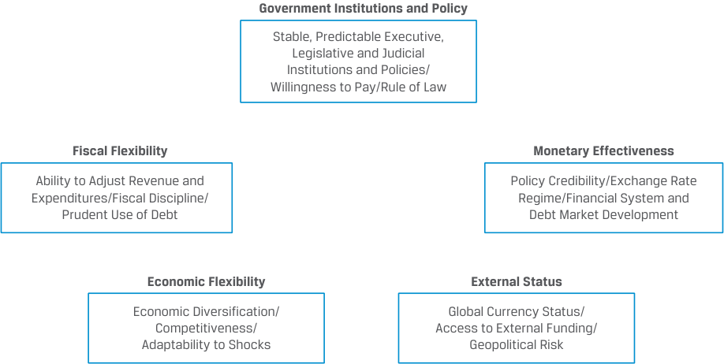
Chú thích hình ảnh: - Thể chế và Chính sách Chính phủ (Government Institutions and Policy): Các thể chế và chính sách Hành pháp, Lập pháp và Tư pháp ổn định, có thể dự báo / Thiện chí trả nợ (Willingness to Pay) / Thượng tôn pháp luật (Rule of Law). - Sự linh hoạt Tài khóa (Fiscal Flexibility): Khả năng điều chỉnh Thu và Chi / Kỷ luật tài khóa (Fiscal Discipline) / Sử dụng nợ thận trọng (Prudent Use of Debt). - Tính hiệu quả Tiền tệ (Monetary Effectiveness): Sự tín nhiệm chính sách (Policy Credibility) / Chế độ tỷ giá hối đoái (Exchange Rate Regime) / Sự phát triển của Hệ thống tài chính và Thị trường nợ. - Sự linh hoạt Kinh tế (Economic Flexibility): Đa dạng hóa kinh tế (Economic Diversification) / Năng lực cạnh tranh (Competitiveness) / Khả năng thích ứng với các cú sốc (Adaptability to Shocks). - Vị thế Đối ngoại (External Status): Vị thế tiền tệ toàn cầu (Global Currency Status) / Khả năng tiếp cận nguồn vốn tài trợ bên ngoài (Access to External Funding) / Rủi ro địa chính trị (Geopolitical Risk).
In practice, many of these qualitative factors are interrelated; for example, a weak legal system often goes hand in hand with a limited ability to collect taxes due or enforce debt contracts. The use of these qualitative factors in assessing creditworthiness is best understood using an example, such as the following country comparison.
Trên thực tế, nhiều yếu tố định tính trong số này có mối liên hệ qua lại với nhau; ví dụ, một hệ thống pháp lý yếu kém thường đi đôi với khả năng thu thuế đến hạn hoặc thực thi các hợp đồng nợ bị hạn chế. Việc sử dụng các yếu tố định tính này trong đánh giá mức độ tín nhiệm sẽ được hiểu rõ nhất thông qua một ví dụ, chẳng hạn như phép so sánh hai quốc gia dưới đây.
EXAMPLE 4
VÍ DỤ 4
Moldova and Romania
Moldova và Romania
Three decades after emerging from central planning to a market economy, Romania and Moldova share linguistic, cultural, and historical ties as well as a common border, but they have different sovereign credit risk profiles. Romania is an investment-grade sovereign issuer (rated Baa3 by Moody’s, and BBB– by S&P and Fitch), while Moldova is a non-investment-grade issuer (rated B3 by Moody’s, and B– by S&P and Fitch) based in part upon the following factors:
Ba thập kỷ sau khi chuyển đổi từ nền kinh tế kế hoạch hóa tập trung sang nền kinh tế thị trường, Romania và Moldova có chung mối liên hệ về ngôn ngữ, văn hóa và lịch sử cũng như đường biên giới chung, nhưng họ lại có hồ sơ rủi ro tín dụng chính phủ khác nhau. Romania là một tổ chức phát hành chính phủ hạng đầu tư (được Moody’s xếp hạng Baa3, và S&P cùng Fitch xếp hạng BBB–), trong khi Moldova là một tổ chức phát hành phi hạng đầu tư (được Moody’s xếp hạng B3, và S&P cùng Fitch xếp hạng B–) dựa một phần vào các yếu tố sau:
Government Institutions & Policy: While both Romania and Moldova established representative democracies following one-party rule under socialism, Romania signed an Association Agreement with the EU in 1992 and formally joined in 2007, codifying its access to European markets and economic integration. Moldova’s political transition was slower, and its government is still considered by many analysts to be an unstable democracy, with weak governance and institutions and widespread corruption. Moldova faces economic and political hurdles in joining the EU, including an unresolved conflict within the Transnistria region as well as internal resistance to EU membership. It did not formally apply to join the EU until 2022.
Thể chế & Chính sách Chính phủ: Mặc dù cả Romania và Moldova đều thiết lập nền dân chủ đại diện sau thời kỳ độc đảng dưới chế độ xã hội chủ nghĩa, Romania đã ký Hiệp định Liên kết (Association Agreement) với EU vào năm 1992 và chính thức gia nhập vào năm 2007, qua đó luật hóa quyền tiếp cận các thị trường châu Âu và hội nhập kinh tế của mình. Quá trình chuyển đổi chính trị của Moldova diễn ra chậm hơn, và chính phủ của nước này vẫn bị nhiều nhà phân tích coi là một nền dân chủ thiếu ổn định, với quản trị và thể chế yếu kém cùng tình trạng tham nhũng tràn lan. Moldova phải đối mặt với những rào cản kinh tế và chính trị trong việc gia nhập EU, bao gồm một cuộc xung đột chưa được giải quyết tại vùng Transnistria cũng như sự phản đối trong nội bộ đối với tư cách thành viên EU. Quốc gia này đã không chính thức nộp đơn xin gia nhập EU cho đến tận năm 2022.
Given its aspiration to join the euro currency area, Romania’s fiscal and monetary policy is focused on meeting strict EU convergence criteria, including limiting fiscal deficits and government debt outstanding, stabilizing exchange rates, and managing inflation and long-term interest
Với nguyện vọng gia nhập khu vực đồng tiền chung châu Âu (eurozone), chính sách tài khóa và tiền tệ của Romania tập trung vào việc đáp ứng các tiêu chí hội tụ (convergence criteria) nghiêm ngặt của EU, bao gồm giới hạn thâm hụt tài khóa và dư nợ chính phủ đang lưu hành, ổn định tỷ giá hối đoái, và kiểm soát lạm phát cùng lãi suất dài hạn.
rates. Romania has a financial and banking system with an active, but small, domestic currency government and corporate bond market. Moldova’s financial system is less well developed, and it faces near-term fiscal and monetary challenges compounded by the Ukraine conflict as outlined above. Moldova’s domestic currency government debt issuance is concentrated in short-term maturities, and its ability to borrow is limited, while domestic inflation is well above the central bank’s target despite its monetary tightening measures.
Romania có một hệ thống tài chính và ngân hàng với thị trường trái phiếu chính phủ và doanh nghiệp bằng nội tệ hoạt động tích cực, dù quy mô còn nhỏ. Hệ thống tài chính của Moldova kém phát triển hơn, và nước này phải đối mặt với những thách thức tài khóa và tiền tệ trong ngắn hạn càng trở nên trầm trọng hơn bởi cuộc xung đột Ukraine như đã nêu ở trên. Việc phát hành nợ chính phủ bằng nội tệ của Moldova tập trung vào các kỳ hạn ngắn, và khả năng vay vốn của nước này bị hạn chế, trong khi lạm phát trong nước vượt xa mục tiêu của ngân hàng trung ương bất chấp các biện pháp thắt chặt tiền tệ.
Economy: Romania has a much larger, more diversified, and competitive industrial economy due to the influx of foreign direct investment from EU countries since its transition to a market economy as well as abundant natural resources. Moldova in contrast was slower to privatize its economy following socialism, facing a limited ability to attract capital over the transition period with a high degree of dependence on Russia for energy imports. The domestic economy remains dependent upon agriculture and food processing (which comprise 40% of GDP).
Kinh tế: Romania có nền kinh tế công nghiệp lớn hơn nhiều, đa dạng hơn và có sức cạnh tranh cao hơn nhờ dòng vốn đầu tư trực tiếp nước ngoài (FDI) đổ vào từ các quốc gia EU kể từ khi chuyển đổi sang nền kinh tế thị trường cũng như nguồn tài nguyên thiên nhiên dồi dào. Ngược lại, Moldova chậm tư nhân hóa nền kinh tế hơn sau thời kỳ xã hội chủ nghĩa, phải đối mặt với khả năng thu hút vốn hạn chế trong suốt giai đoạn chuyển đổi cùng mức độ phụ thuộc cao vào Nga về nhập khẩu năng lượng. Nền kinh tế trong nước vẫn phụ thuộc vào nông nghiệp và chế biến thực phẩm (chiếm tới 40% GDP).
External Status: While both countries increased access to foreign cur- rency bond markets after emerging from socialism, Moldova rescheduled its foreign currency debt in 2002 to avoid default and remains dependent upon IMF credit facilities as outlined earlier. In contrast, Romania has maintained access to international capital markets, issuing foreign currency (EUR and USD) bonds both before and after the 2022 invasion of Ukraine. As Moldova is more dependent on regional trading partners, has less well diversified exports and fewer trading partners, it has faced greater trade disruption due to the war in Ukraine.
Vị thế Đối ngoại: Mặc dù cả hai quốc gia đều tăng cường khả năng tiếp cận các thị trường trái phiếu ngoại tệ sau khi thoát khỏi thời kỳ xã hội chủ nghĩa, Moldova đã phải cơ cấu lại thời hạn trả nợ (rescheduled) đối với khoản nợ ngoại tệ của mình vào năm 2002 để tránh vỡ nợ và vẫn phụ thuộc vào các hạn mức tín dụng của IMF như đã phác thảo trước đó. Ngược lại, Romania vẫn duy trì được quyền tiếp cận các thị trường vốn quốc tế, phát hành trái phiếu ngoại tệ (EUR và USD) cả trước và sau cuộc tấn công vào Ukraine năm 2022. Vì Moldova phụ thuộc nhiều hơn vào các đối tác thương mại trong khu vực, có cơ cấu xuất khẩu kém đa dạng hơn và ít đối tác thương mại hơn, nước này đã phải đối mặt với sự gián đoạn thương mại lớn hơn do cuộc chiến tại Ukraine.
Quantitative Factors
Các Yếu tố Định lượng (Quantitative Factors)
Quantitative credit analysis seeks to estimate the likelihood that an issuer can meet its fixed debt obligations. Unlike corporations that issue periodic financial statements based upon generally accepted accounting principles, sovereign credit analysts must rely on government economic data, which varies in terms of quality and timing, lacks comparability across countries and over time, and faces periodic revision as well as political considerations. As a result, detailed public sector financial balance sheets tend to be of limited use in forecasting creditworthiness, with analysts focusing on a top-down, macroeconomic approach based upon the quantitative factors shown in Exhibit 3.
Phân tích tín dụng định lượng tìm cách ước tính khả năng một tổ chức phát hành có thể đáp ứng các nghĩa vụ nợ cố định của mình. Không giống như các doanh nghiệp vốn phát hành báo cáo tài chính định kỳ dựa trên các nguyên tắc kế toán được chấp nhận chung (GAAP/IFRS), các nhà phân tích tín dụng chính phủ có chủ quyền phải dựa vào dữ liệu kinh tế của chính phủ, vốn khác nhau về chất lượng và thời điểm công bố, thiếu khả năng so sánh giữa các quốc gia và theo thời gian, đồng thời phải đối mặt với việc điều chỉnh định kỳ cũng như các cân nhắc về chính trị. Do đó, bảng cân đối kế toán tài chính chi tiết của khu vực công có xu hướng hạn chế về mặt công dụng trong việc dự báo mức độ tín nhiệm, khiến các nhà phân tích tập trung vào phương pháp tiếp cận kinh tế vĩ mô từ trên xuống (top-down, macroeconomic approach) dựa trên các yếu tố định lượng được trình bày trong Bảng minh họa 3.
Exhibit 3: Quantitative Factors in Sovereign Creditworthiness
Bảng minh họa 3: Các Yếu tố Định lượng trong Đánh giá Mức độ Tín nhiệm Chính phủ (Quantitative Factors in Sovereign Creditworthiness)
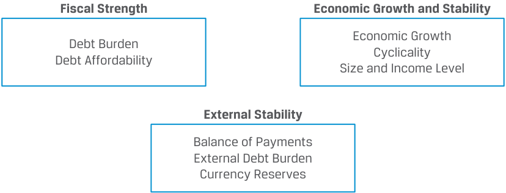
Chú thích hình ảnh: - Sức mạnh Tài khóa (Fiscal Strength): Gánh nặng nợ (Debt Burden), Khả năng chi trả nợ (Debt Affordability). - Tăng trưởng và Sự ổn định Kinh tế (Economic Growth and Stability): Tăng trưởng kinh tế (Economic Growth), Tính chu kỳ (Cyclicality), Quy mô và Mức thu nhập (Size and Income Level). - Sự ổn định Đối ngoại (External Stability): Cán cân thanh toán (Balance of Payments), Gánh nặng nợ nước ngoài (External Debt Burden), Dự trữ ngoại tệ (Currency Reserves).
Financial ratios allow the comparison across sovereign issuers and over time in a similar way as for corporate issuers. While the relevant numerator for such ratios is often debt size or the level of periodic fixed payments as for corporate issuers, the denominator is not total sales or total assets but often either government revenue or domestic GDP as the primary measure of economic activity subject to taxation.
Các tỷ số tài chính cho phép so sánh giữa các tổ chức phát hành chính phủ có chủ quyền và theo thời gian theo cách tương tự như đối với các tổ chức phát hành doanh nghiệp. Mặc dù tử số có liên quan của các tỷ số như vậy thường là quy mô nợ hoặc mức thanh toán cố định định kỳ giống như đối với các tổ chức phát hành doanh nghiệp, nhưng mẫu số không phải là tổng doanh thu bán hàng hay tổng tài sản mà thường là doanh thu của chính phủ (government revenue) hoặc GDP trong nước (domestic GDP) với tư cách là thước đo chính của hoạt động kinh tế chịu thuế.
Fiscal Strength: Measuring a sovereign issuer’s relative fiscal strength depends upon both its current and expected future debt burden, as well as the relative reliance on debt versus other financial resources. Some of the key financial ratios that measure sovereign fiscal strength are shown in Exhibit 4.
Sức mạnh Tài khóa (Fiscal Strength): Việc đo lường sức mạnh tài khóa tương đối của một tổ chức phát hành chính phủ phụ thuộc vào cả gánh nặng nợ hiện tại và dự kiến trong tương lai, cũng như mức độ phụ thuộc tương đối vào nợ vay so với các nguồn lực tài chính khác. Một số tỷ số tài chính then chốt đo lường sức mạnh tài khóa của chính phủ được trình bày trong Bảng minh họa 4.
Exhibit 4: Key Financial Ratios to Measure Fiscal Strength
Bảng minh họa 4: Các Tỷ số Tài chính Chính để Đo lường Sức mạnh Tài khóa (Key Financial Ratios to Measure Fiscal Strength)
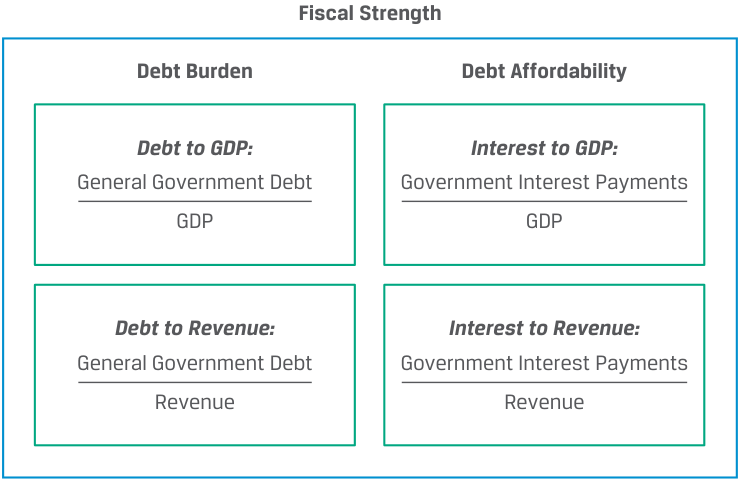
Debt burden measures are similar to leverage and provide an indication of a government’s solvency. In each case, a higher debt burden ratio is associated with lower credit quality. In addition, annual fiscal surpluses or deficits as a percentage of GDP are often used to measure fiscal discipline and to determine whether a country’s debt burden is improving or deteriorating over time. Debt affordability, on the other hand, provides a measure of debt coverage, with a higher ratio also a sign of lower credit quality.
Các thước đo gánh nặng nợ (debt burden) tương tự như đòn bẩy tài chính (leverage) và cung cấp một chỉ báo về khả năng thanh toán dài hạn (solvency) của chính phủ. Trong mỗi trường hợp, tỷ số gánh nặng nợ cao hơn gắn liền với chất lượng tín dụng thấp hơn. Ngoài ra, thặng dư hoặc thâm hụt tài khóa hàng năm tính theo tỷ lệ phần trăm của GDP thường được sử dụng để đo lường kỷ luật tài khóa và để xác định xem gánh nặng nợ của một quốc gia đang cải thiện hay suy giảm theo thời gian. Mặt khác, khả năng chi trả nợ (debt affordability) cung cấp một thước đo về khả năng trang trải nợ (debt coverage), với tỷ số cao hơn cũng là dấu hiệu của chất lượng tín dụng thấp hơn.
EXAMPLE 5
VÍ DỤ 5
Fiscal Deficits and Debt-to-GDP in the Eurozone Crisis
Thâm hụt Tài khóa và Tỷ lệ Nợ trên GDP trong Cuộc khủng hoảng Khu vực Đồng tiền chung Châu Âu (Eurozone Crisis)
The European debt crisis of 2010 arose as several European Union member states (including Greece, Portugal, Ireland, Spain, and Cyprus) were no longer able to meet their financial obligations without the assistance of other EU member states, the European Central Bank, and/or the International Monetary Fund. The situation stemmed largely from the aftermath of the Global Financial Crisis of 2008–09, as governments provided financial assistance to failing domestic banks while their domestic economies stalled and tax revenue fell. As members of the euro currency zone under the direction of the European Central Bank, these countries were prevented from using monetary policy tools, such as devaluing the domestic currency, in response to the crisis. As shown in the following figures, relatively high pre-existing debt-to-GDP ratios coupled with rising fiscal deficits caused sovereign credit spreads among these countries relative to Germany, the largest and most creditworthy member of the EU, to widen dramatically. Later,
Cuộc khủng hoảng nợ châu Âu năm 2010 nổ ra khi một số quốc gia thành viên Liên minh Châu Âu (bao gồm Hy Lạp, Bồ Đào Nha, Ireland, Tây Ban Nha và Cộng hòa Síp) không còn khả năng đáp ứng các nghĩa vụ tài chính của mình nếu không có sự hỗ trợ của các quốc gia thành viên EU khác, Ngân hàng Trung ương Châu Âu (ECB), và/hoặc Quỹ Tiền tệ Quốc tế (IMF). Tình hình này bắt nguồn phần lớn từ hệ lụy của Cuộc khủng hoảng Tài chính Toàn cầu năm 2008–2009, khi các chính phủ cung cấp hỗ trợ tài chính cho các ngân hàng trong nước đang bên bờ vực sụp đổ trong khi nền kinh tế nội địa của họ bị đình trệ và nguồn thu thuế sụt giảm. Với tư cách là thành viên của khu vực đồng tiền chung châu Âu dưới sự điều hành của Ngân hàng Trung ương Châu Âu, các quốc gia này không thể sử dụng các công cụ chính sách tiền tệ, chẳng hạn như phá giá đồng nội tệ, để ứng phó với cuộc khủng hoảng. Như được thể hiện trong các biểu đồ sau đây, tỷ số nợ trên GDP vốn đã ở mức tương đối cao từ trước kết hợp với thâm hụt tài khóa gia tăng đã khiến phần bù tín dụng chính phủ của các quốc gia này so với Đức — thành viên lớn nhất và có mức độ tín nhiệm cao nhất của EU — nới rộng một cách kịch tính. Sau đó,
some of these EU members adopted austerity measures to improve their fiscal governance and obtain support from stronger EU member states, which resulted in tighter sovereign credit spreads over time.
một số thành viên EU này đã áp dụng các biện pháp thắt lưng buộc bụng (austerity measures) để cải thiện quản trị tài khóa của họ và nhận được sự hỗ trợ từ các quốc gia thành viên EU mạnh hơn, dẫn đến phần bù tín dụng chính phủ thu hẹp lại theo thời gian.
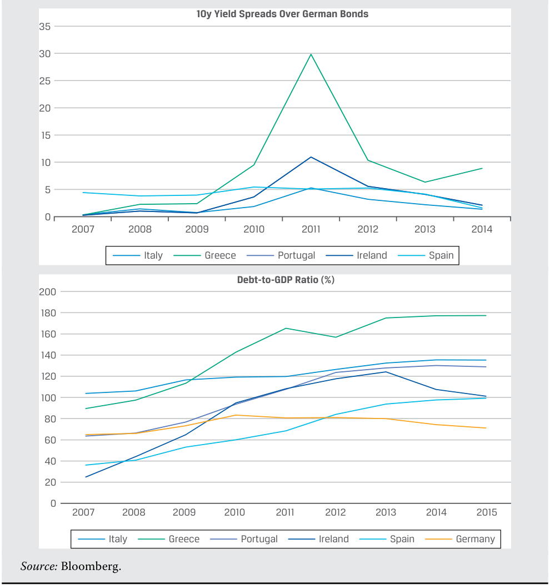
Chú thích hình ảnh: - Biểu đồ trái: Phần bù lợi suất kỳ hạn 10 năm so với Trái phiếu Chính phủ Đức (10y Yield Spreads Over German Bonds, giai đoạn 2007–2014) của Ý (
Italy), Hy Lạp (Greece– tăng vọt lên trên 30%), Bồ Đào Nha (Portugal), Ireland (Ireland) và Tây Ban Nha (Spain). - Biểu đồ phải: Tỷ lệ Nợ trên GDP (Debt-to-GDP Ratio (%), giai đoạn 2007–2015) của Ý, Hy Lạp (vượt 170%), Bồ Đào Nha, Ireland, Tây Ban Nha so với Đức (Germany). - Nguồn: Bloomberg.
The ratios in Exhibit 4 are used by rating agencies to gauge a country’s relative debt burden and debt affordability in a similar manner to corporate financial ratios. Exhibit 5 shows how these fiscal strength metrics align to Moody’s sovereign ratings, for example. In the case of Moody’s and other rating agencies, these and other financial metrics are not considered in isolation but rather are weighted and combined with other factors in a comprehensive credit analysis.
Các tỷ số trong Bảng minh họa 4 được các tổ chức xếp hạng sử dụng để đo lường gánh nặng nợ và khả năng chi trả nợ tương đối của một quốc gia theo cách tương tự như các tỷ số tài chính doanh nghiệp. Ví dụ, Bảng minh họa 5 cho thấy cách các thước đo sức mạnh tài khóa này tương ứng với các mức xếp hạng chính phủ của Moody’s. Trong trường hợp của Moody’s và các tổ chức xếp hạng khác, những thước đo này và các chỉ tiêu tài chính khác không được xem xét một cách biệt lập mà được gắn trọng số và kết hợp với các yếu tố khác trong một phân tích tín dụng toàn diện.
Exhibit 5: Debt Burden and Debt Affordability
Bảng minh họa 5: Gánh nặng Nợ và Khả năng Chi trả Nợ (Debt Burden and Debt Affordability)
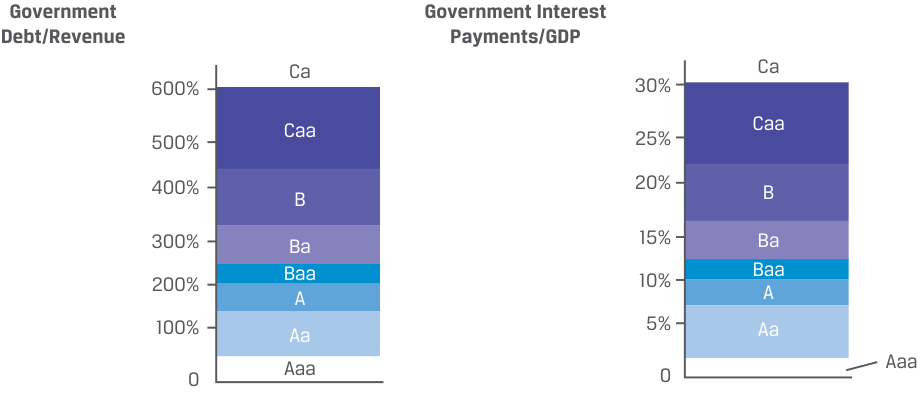
Chú thích hình ảnh: - Nợ Chính phủ / Thu ngân sách (Government Debt/Revenue): Tăng dần từ hạng
Aaa,Aa(< 100–200%),A,Baa,Ba,B,CaađếnCa(> 600%). - Chi trả Lãi vay của Chính phủ / GDP (Government Interest Payments/GDP): Tăng dần từ hạngAaa,Aa(< 5%),A,Baa,Ba,B,CaađếnCa(> 30%).
Economic Growth and Stability: As larger, wealthier economies are better positioned to achieve sustainable growth and withstand economic and political shocks, the economy’s size as measured by GDP as well as its per capita income are important factors in gauging a country’s economic prospects. Historical and projected future real economic growth levels as well as their variability are also key quantitative measures, which are summarized in Exhibit 6.
Tăng trưởng và Sự ổn định Kinh tế (Economic Growth and Stability): Vì các nền kinh tế lớn hơn, giàu có hơn có vị thế tốt hơn để đạt được mức tăng trưởng bền vững và chống chịu trước các cú sốc kinh tế và chính trị, quy mô của nền kinh tế được đo lường bằng GDP cũng như thu nhập bình quân đầu người của nó là những yếu tố quan trọng trong việc đánh giá triển vọng kinh tế của một quốc gia. Các mức tăng trưởng kinh tế thực lịch sử và dự phóng trong tương lai cũng như mức độ biến động của chúng cũng là những thước đo định lượng then chốt, được tóm tắt trong Bảng minh họa 6.
Exhibit 6: Key Financial Measures of Economic Growth and Stability
Bảng minh họa 6: Các Thước đo Tài chính Chính về Tăng trưởng và Sự ổn định Kinh tế (Key Financial Measures of Economic Growth and Stability)
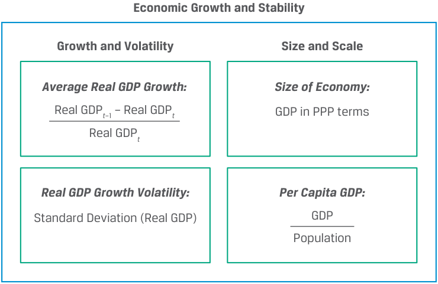
Chú thích hình ảnh & Công thức: - Tăng trưởng và Độ biến động (Growth and Volatility): - Tăng trưởng GDP thực trung bình (Average Real GDP Growth): $\frac{\text{Real GDP}_t - \text{Real GDP}_{t-1}}{\text{Real GDP}_{t-1}}$ (lưu ý: trong hình gốc in nhầm chỉ số $t-1$ và $t$) - Độ biến động tăng trưởng GDP thực (Real GDP Growth Volatility): Độ lệch chuẩn của tăng trưởng GDP thực – $\text{Standard Deviation (Real GDP)}$ - Quy mô và Tầm cỡ (Size and Scale): - Quy mô nền kinh tế (Size of Economy): GDP tính theo ngang giá sức mua ($\text{GDP in PPP terms}$) - GDP bình quân đầu người (Per Capita GDP): $\frac{\text{GDP}}{\text{Population (Dân số)}}$
EXAMPLE 6
VÍ DỤ 6
Sovereign Credit Risk of Southeast Asian Economies
Rủi ro Tín dụng Chính phủ của các Nền kinh tế Đông Nam Á
A junior analyst is conducting a comparative credit analysis of several upper-medium to non-investment-grade Southeast Asian sovereign issuers (Malaysia, Thailand, Indonesia, Vietnam, and the Philippines) in the aftermath of the COVID-19 pandemic. As a first step, she compares the relative size of these five economies based on GDP as well as per capita GDP:
Một chuyên viên phân tích sơ cấp đang thực hiện phân tích tín dụng so sánh đối với một số tổ chức phát hành chính phủ tại Đông Nam Á thuộc nhóm từ cấp trung bình cao đến phi hạng đầu tư (Malaysia, Thái Lan, Indonesia, Việt Nam và Philippines) sau đại dịch COVID-19. Ở bước đầu tiên, cô ấy so sánh quy mô tương đối của năm nền kinh tế này dựa trên GDP cũng như GDP bình quân đầu người:
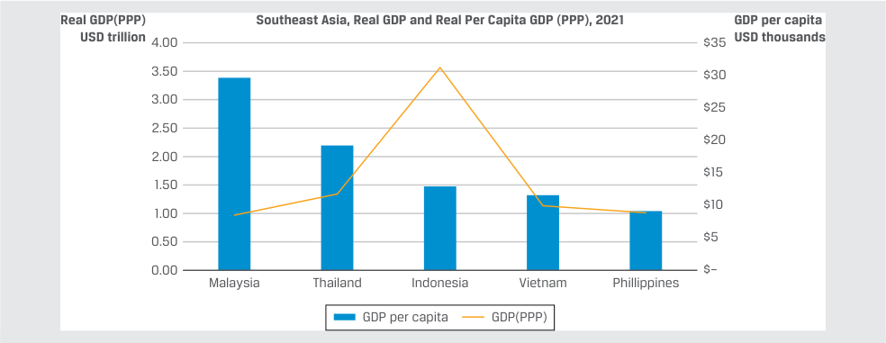
Nguồn: Ngân hàng Thế giới (data.worldbank.org).
Chú thích hình ảnh: Biểu đồ so sánh GDP thực (theo PPP, trục trái, nghìn tỷ USD) và GDP thực bình quân đầu người (theo PPP, trục phải, nghìn USD) năm 2021 của 5 quốc gia Đông Nam Á: Malaysia, Thái Lan, Indonesia, Việt Nam và Philippines.
Source: World Bank (data.worldbank.org).
While Indonesia is the largest economy in Southeast Asia in terms of GDP on a purchasing power parity (PPP) basis, Malaysia has the smallest economy but by far the highest per capita GDP. Despite its size relative to its neighbors, the Malaysian economy is a relatively high-growth, competitive export-based economy focused on high technology products, such as electronics and health care. Malaysia’s growth, competitiveness, and stability are among the economic factors that have earned it the highest credit rating among the five countries (A3 from Moody’s and A from S&P).
Mặc dù Indonesia là nền kinh tế lớn nhất ở Đông Nam Á xét theo GDP trên cơ sở ngang giá sức mua (PPP), Malaysia có nền kinh tế nhỏ nhất nhưng lại có GDP bình quân đầu người cao nhất một cách vượt trội. Bất chấp quy mô của mình so với các nước láng giềng, nền kinh tế Malaysia là một nền kinh tế dựa vào xuất khẩu có tính cạnh tranh và tăng trưởng tương đối cao, tập trung vào các sản phẩm công nghệ cao như điện tử và chăm sóc sức khỏe. Tăng trưởng, năng lực cạnh tranh và sự ổn định của Malaysia nằm trong số các yếu tố kinh tế giúp quốc gia này đạt được mức xếp hạng tín nhiệm cao nhất trong số năm quốc gia (A3 từ Moody’s và A từ S&P).
GDP growth rates over the past decade and volatility are key indicators of relative trends among economies, as shown in the following comparison over the past decade:
Tốc độ tăng trưởng GDP trong thập kỷ qua và độ biến động là những chỉ báo then chốt phản ánh xu hướng tương đối giữa các nền kinh tế, như được thể hiện trong phép so sánh dưới đây trong thập kỷ qua:
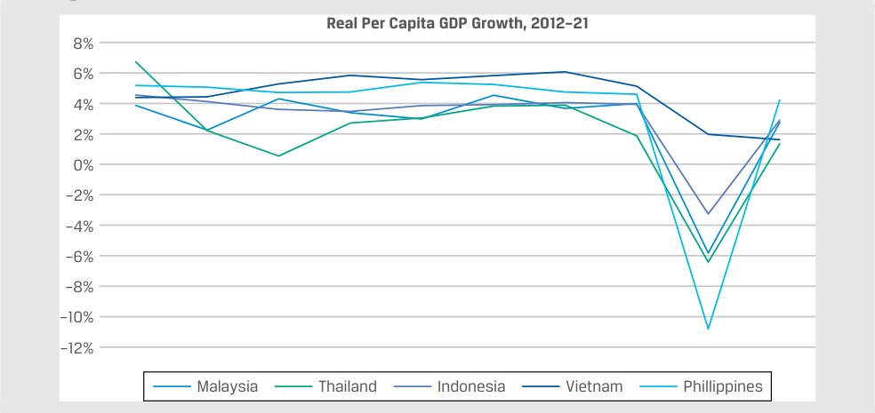
Nguồn: Ngân hàng Thế giới (data.worldbank.org).
Chú thích hình ảnh: Biểu đồ Tăng trưởng GDP thực bình quân đầu người giai đoạn 2012–2021 (Real Per Capita GDP Growth, 2012–21) của Malaysia, Thái Lan, Indonesia, Việt Nam và Philippines. Việt Nam là quốc gia duy nhất duy trì mức tăng trưởng dương liên tục trong toàn bộ giai đoạn, kể cả năm 2020.
Source: World Bank (data.worldbank.org).
While Vietnam is among the smallest of the five economies with the second-lowest per capita GDP, it enjoyed the highest growth rate over the decade and was the only Southeast Asian economy that grew in 2020. The following summarizes average GDP growth and volatility (as measured by standard deviation of annual GDP changes):
Mặc dù Việt Nam nằm trong số những nền kinh tế nhỏ nhất trong năm quốc gia với mức GDP bình quân đầu người thấp thứ hai, nhưng Việt Nam lại đạt tốc độ tăng trưởng cao nhất trong thập kỷ qua và là nền kinh tế Đông Nam Á duy nhất tăng trưởng dương vào năm 2020. Biểu đồ dưới đây tóm tắt mức tăng trưởng GDP trung bình và độ biến động (được đo bằng độ lệch chuẩn của các mức thay đổi GDP hàng năm):
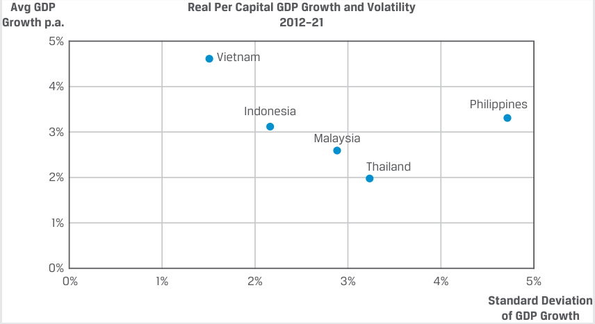
Chú thích hình ảnh: Biểu đồ phân tán Tăng trưởng GDP thực bình quân đầu người trung bình hàng năm (trục tung) và Độ lệch chuẩn tăng trưởng GDP (trục hoành) giai đoạn 2012–2021: Việt Nam đạt tăng trưởng trung bình cao nhất (~5%/năm) với độ lệch chuẩn thấp nhất (~1.5%).
Despite being the lowest rated of the five countries (rated Ba3 by Moody’s and BB+ by Standard & Poor’s), Vietnam’s stable and high growth relative to its neighbors contributed to a positive outlook from Moody’s and ratings upgrades from BB– to BB+ over the past decade from S&P.
Mặc dù là quốc gia có mức xếp hạng thấp nhất trong số năm quốc gia (được Moody’s xếp hạng Ba3 và Standard & Poor’s xếp hạng BB+), mức tăng trưởng cao và ổn định của Việt Nam so với các nước láng giềng đã góp phần mang lại triển vọng tích cực từ Moody’s và các đợt nâng bậc xếp hạng từ BB– lên BB+ trong thập kỷ qua từ S&P.
External Stability: A country’s external stability depends critically upon whether foreign investors are able and willing to hold assets in a country’s currency. Countries with actively traded currencies where foreign entities are significant investors in domestic currency assets or those whose domestic currency is held in reserve by other countries tend to exhibit greater external stability.
Sự ổn định Đối ngoại (External Stability): Sự ổn định đối ngoại của một quốc gia phụ thuộc rất lớn vào việc liệu các nhà đầu tư nước ngoài có khả năng và sẵn lòng nắm giữ tài sản bằng đồng tiền của quốc gia đó hay không. Các quốc gia có đồng tiền được giao dịch sôi động nơi các tổ chức nước ngoài là những nhà đầu tư đáng kể vào các tài sản bằng nội tệ hoặc những quốc gia có đồng nội tệ được các nước khác nắm giữ làm dự trữ có xu hướng thể hiện sự ổn định đối ngoại lớn hơn.
Key factors influencing whether a sovereign government with a non-reserve currency can meet external debt obligations include its external liquidity and solvency, that is, the short- and long-term ability to generate sufficient, stable foreign currency cash inflows that may be used to meet interest and principal payments on external debt as well as other obligations to foreign investors.
Các yếu tố then chốt ảnh hưởng đến việc liệu một chính phủ có chủ quyền không sở hữu đồng tiền dự trữ có thể đáp ứng các nghĩa vụ nợ nước ngoài hay không bao gồm thanh khoản và khả năng thanh toán đối ngoại (external liquidity and solvency) của quốc gia đó, tức là khả năng ngắn hạn và dài hạn trong việc tạo ra các dòng tiền ngoại tệ vào (foreign currency cash inflows) ổn định, đầy đủ để có thể sử dụng nhằm thanh toán tiền lãi và nợ gốc đối với nợ nước ngoài cũng như các nghĩa vụ khác đối với các nhà đầu tư nước ngoài.
Exhibit 7: Key Financial Ratios to Measure External Stability
Bảng minh họa 7: Các Tỷ số Tài chính Chính để Đo lường Sự ổn định Đối ngoại (Key Financial Ratios to Measure External Stability)
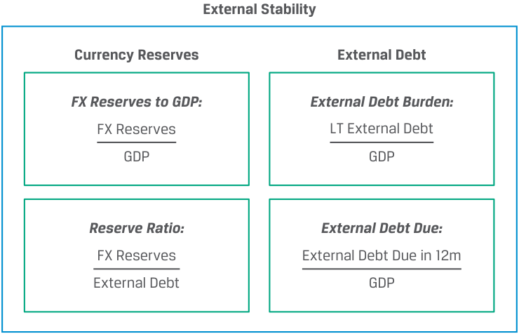
Quantitative measures of external stability focus on the relative size of external debt as compared to available sources of repayment. These sources include broad measures, such as GDP, as well as foreign currency balances (i.e., reserves), or foreign currency cash flows, often measured as currency account receipts. Current account deficits and surpluses based on the international trade of goods and services offset changes
Các thước đo định lượng về sự ổn định đối ngoại tập trung vào quy mô tương đối của nợ nước ngoài so với các nguồn trả nợ sẵn có. Các nguồn này bao gồm những thước đo rộng như GDP, cũng như số dư ngoại tệ (tức dự trữ ngoại hối), hoặc các dòng tiền ngoại tệ, thường được đo lường bằng các khoản thu tài khoản vãng lai (current account receipts). Thâm hụt và thặng dư tài khoản vãng lai dựa trên thương mại quốc tế về hàng hóa và dịch vụ sẽ bù trừ với những thay đổi
in a country’s capital account through capital inflows or outflows from abroad. Many countries with FX reserves accumulate such balances through a current account surplus with developed countries, while others benefit from foreign currency remittances from citizens working abroad. Declining or volatile foreign currency balances or cash flows reduce a sovereign borrower’s ability to service foreign currency debt. While quantitative ratios provide a basis for comparison, it is important to consider a number of factors, as outlined in the following example.
trong tài khoản vốn (capital account) của một quốc gia thông qua các dòng vốn chảy vào hoặc chảy ra từ nước ngoài. Nhiều quốc gia có dự trữ ngoại hối tích lũy số dư như vậy thông qua thặng dư tài khoản vãng lai với các nước phát triển, trong khi các quốc gia khác hưởng lợi từ lượng kiều hối bằng ngoại tệ (foreign currency remittances) từ công dân làm việc ở nước ngoài gửi về. Số dư hoặc dòng tiền ngoại tệ sụt giảm hay biến động mạnh làm giảm khả năng trả nợ ngoại tệ của bên đi vay là chính phủ có chủ quyền. Mặc dù các tỷ số định lượng cung cấp cơ sở để so sánh, điều quan trọng là phải xem xét một số yếu tố khác, như được phác thảo trong ví dụ sau đây.
EXAMPLE 7
VÍ DỤ 7
FX Reserves of Southeast Asian Economies
Dự trữ Ngoại hối của các Nền kinh tế Đông Nam Á
| Country | Reserve Ratio | FX Reserves to GDP |
|---|---|---|
| Malaysia | 54% | 11.9% |
| Thailand | 102% | 16.4% |
| h Indonesia |
31% | 3.9% |
| Vietnam | 84% | 9.9% |
| Philippines | 96% | 10.3% |
| Quốc gia (Country) | Tỷ số Dự trữ (Reserve Ratio) | Dự trữ Ngoại hối trên GDP (FX Reserves to GDP) |
|---|---|---|
| Malaysia | 54% | 11.9% |
| Thái Lan | 102% | 16.4% |
| Indonesia | 31% | 3.9% |
| Việt Nam | 84% | 9.9% |
| Philippines | 96% | 10.3% |
Source: Bloomberg, FYE 2020.
Nguồn: Bloomberg, Cuối năm tài chính (FYE) 2020.
A cursory comparison of ratios based upon currency reserves among the five Southeast Asian countries shown above suggests that Thailand should have the highest external creditworthiness among the five countries. In fact, Malaysia’s greater economic competitiveness and lower reliance on foreign currency-denominated debt actually results in higher external creditworthiness as measured by rating agencies (with a Moody’s external long-term foreign currency rating of A3 versus Baa1 for Thailand). Despite Thailand’s higher FX reserves to GDP, its foreign currency credit rating is the same as that for the Philippines. This is due in large part to the far greater proportion of Philippine workers abroad sending foreign currency to the country, which in 2020 comprised nearly 10% of GDP in the Philippines versus less than 2% in Thailand.
Một phép so sánh sơ bộ các tỷ số dựa trên dự trữ ngoại tệ giữa năm quốc gia Đông Nam Á được trình bày ở trên gợi ý rằng Thái Lan đáng lẽ phải có mức độ tín nhiệm đối ngoại cao nhất trong số năm quốc gia. Trên thực tế, năng lực cạnh tranh kinh tế lớn hơn và mức độ phụ thuộc thấp hơn vào nợ định danh bằng ngoại tệ của Malaysia mới thực sự mang lại mức độ tín nhiệm đối ngoại cao hơn theo đánh giá của các tổ chức xếp hạng (với mức xếp hạng ngoại tệ dài hạn đối ngoại của Moody’s là A3 so với Baa1 của Thái Lan). Mặc dù Thái Lan có tỷ lệ dự trữ ngoại hối trên GDP cao hơn, mức xếp hạng tín nhiệm ngoại tệ của nước này lại ngang bằng với Philippines. Điều này phần lớn là nhờ tỷ trọng lớn hơn nhiều của người lao động Philippines ở nước ngoài gửi ngoại tệ về nước, vốn vào năm 2020 chiếm gần 10% GDP tại Philippines so với mức dưới 2% tại Thái Lan.
In the case of emerging and frontier market countries where commodity exports generate the bulk of foreign currency reserves, commodity demand and prices can be primary factors driving sovereign creditworthiness. While countries facing strong, stable commodity demand, such as oil-producing nations, often accumulate substantial reserves and establish sovereign wealth funds to increase economic diversification, adverse commodity price fluctuations can contribute to sovereign default, as in the following case.
Trong trường hợp của các quốc gia thị trường mới nổi và cận biên nơi hoạt động xuất khẩu hàng hóa cơ bản tạo ra phần lớn dự trữ ngoại tệ, nhu cầu và giá cả hàng hóa cơ bản có thể là những yếu tố chính thúc đẩy mức độ tín nhiệm của chính phủ. Mặc dù các quốc gia đứng trước nhu cầu hàng hóa cơ bản mạnh mẽ, ổn định — chẳng hạn như các quốc gia sản xuất dầu mỏ — thường tích lũy được lượng dự trữ đáng kể và thành lập các quỹ đầu tư quốc gia (sovereign wealth funds) để tăng cường đa dạng hóa kinh tế, nhưng những biến động bất lợi của giá hàng hóa cơ bản có thể góp phần dẫn đến vỡ nợ chính phủ, như trong trường hợp sau đây.
EXAMPLE 8
VÍ DỤ 8
Zambia’s Default in 2020
Vụ Vỡ nợ của Zambia vào năm 2020 (Zambia’s Default in 2020)
The Republic of Zambia defaulted on a USD42.5 million Eurobond payment in November 2020, the first sovereign default following the COVID-19 pandemic. Zambia is Africa’s second-largest producer of copper, which comprises 60% of its exports. An economic slowdown due to COVID-19 accelerated a decline in copper prices beginning in 2014. By November 2020, Zambia’s annual inflation rate climbed to 17.4%, its highest level in four years. Additionally, the national currency, the kwacha (ZMK), depreciated 33% against the US dollar in 2020, creating more pain for Zambian consumers. Zambia’s total external debt had more than doubled in just five years, increasing from USD4.8 billion, or 18% of
Cộng hòa Zambia đã vỡ nợ đối với khoản thanh toán trái phiếu Eurobond trị giá 42.5 triệu USD vào tháng 11 năm 2020, trở thành vụ vỡ nợ chính phủ đầu tiên sau đại dịch COVID-19. Zambia là nhà sản xuất đồng lớn thứ hai của Châu Phi, mặt hàng chiếm tới 60% kim ngạch xuất khẩu của nước này. Sự suy giảm kinh tế do COVID-19 đã đẩy nhanh đà sụt giảm của giá đồng bắt đầu từ năm 2014. Đến tháng 11 năm 2020, tỷ lệ lạm phát hàng năm của Zambia đã leo lên mức 17.4%, mức cao nhất trong bốn năm. Ngoài ra, đồng tiền quốc gia là đồng kwacha (ZMK) đã mất giá 33% so với đồng đô la Mỹ vào năm 2020, gây thêm nhiều khó khăn cho người tiêu dùng Zambia. Tổng nợ nước ngoài của Zambia đã tăng hơn gấp đôi chỉ trong vòng 5 năm, tăng từ 4.8 tỷ USD, tương đương 18%
gross domestic product, at the end of 2014 to USD11.2 billion, or 48% of GDP, in 2019. At the same time, external reserves fell from over 50% of external debt to just 5% due to falling prices for its copper exports. This led to the inevitable default on external debt and the consequent restructuring.
tổng sản phẩm quốc nội (GDP) vào cuối năm 2014 lên 11.2 tỷ USD, tương đương 48% GDP vào năm 2019. Cùng lúc đó, dự trữ đối ngoại đã giảm từ mức hơn 50% nợ nước ngoài xuống chỉ còn 5% do giá xuất khẩu đồng sụt giảm. Điều này đã dẫn đến sự vỡ nợ không thể tránh khỏi đối với khoản nợ nước ngoài và quá trình tái cơ cấu nợ kéo theo sau đó.
QUESTION SET
BỘ CÂU HỎI (QUESTION SET)
- Which of the following statements best describes debt burden versus debt affordability measures?
-
A. Debt burden measures are similar to leverage, indicating a government’s relative solvency, while debt affordability measures provide a measure of debt coverage.
-
B. A higher interest-to-GDP measure is associated with higher credit quality, while a lower debt-to-GDP ratio signals less credit risk.
-
C. Higher debt to revenue is associated with greater credit risk, while a higher interest-to-revenue ratio signals higher credit quality.
-
Solution: A is correct. B is incorrect, since a higher interest-to-GDP measure is associated with lower credit quality, while a lower debt-to-GDP ratio signals less credit risk. C is incorrect, as higher debt to revenue is associated with greater credit risk, while a higher interest-to-revenue ratio signals lower credit quality.
- Determine the correct answers to fill in the blanks: A key distinction for the creditworthiness of a sovereign government is whether its domestic currency is considered to be a _ currency, that is, one that is fully convertible and held by foreign central banks and other investors. When foreign investors are able and willing to hold assets in a country’s currency, it greatly __ the government’s ability to access foreign investors using domestic currency debt.
- Solution:
- Phát biểu nào sau đây mô tả đúng nhất các thước đo gánh nặng nợ (debt burden) so với các thước đo khả năng chi trả nợ (debt affordability)?
-
A. Các thước đo gánh nặng nợ tương tự như đòn bẩy tài chính, biểu thị khả năng thanh toán dài hạn tương đối của chính phủ, trong khi các thước đo khả năng chi trả nợ cung cấp một thước đo về khả năng trang trải nợ (debt coverage).
-
B. Thước đo chi phí lãi vay trên GDP cao hơn gắn liền với chất lượng tín dụng cao hơn, trong khi tỷ số nợ trên GDP thấp hơn báo hiệu ít rủi ro tín dụng hơn.
-
C. Tỷ số nợ trên thu ngân sách cao hơn gắn liền với rủi ro tín dụng lớn hơn, trong khi tỷ số chi phí lãi vay trên thu ngân sách cao hơn báo hiệu chất lượng tín dụng cao hơn.
-
Lời giải: A là đáp án đúng. B sai, vì thước đo chi phí lãi vay trên GDP cao hơn gắn liền với chất lượng tín dụng thấp hơn, trong khi tỷ số nợ trên GDP thấp hơn báo hiệu ít rủi ro tín dụng hơn. C sai, vì nợ trên thu ngân sách cao hơn gắn liền với rủi ro tín dụng lớn hơn, trong khi tỷ số chi phí lãi vay trên thu ngân sách cao hơn báo hiệu chất lượng tín dụng thấp hơn.
- Xác định các câu trả lời đúng để điền vào chỗ trống: Một điểm phân biệt then chốt đối với mức độ tín nhiệm của một chính phủ có chủ quyền là liệu đồng nội tệ của quốc gia đó có được coi là một đồng tiền _ hay không, tức là một đồng tiền có khả năng chuyển đổi hoàn toàn và được nắm giữ bởi các ngân hàng trung ương nước ngoài cùng các nhà đầu tư khác. Khi các nhà đầu tư nước ngoài có khả năng và sẵn lòng nắm giữ tài sản bằng đồng tiền của một quốc gia, điều đó __ đáng kể khả năng của chính phủ trong việc tiếp cận các nhà đầu tư nước ngoài bằng cách sử dụng nợ định danh bằng nội tệ.
- Lời giải:
A key distinction for the creditworthiness of a sovereign government is whether its domestic currency is considered to be a reserve currency, that is, one that is fully convertible and held by foreign central banks and other investors. When foreign investors are able and willing to hold assets in a country’s currency, it greatly expands the government’s ability to access foreign investors using domestic currency debt.
Một điểm phân biệt then chốt đối với mức độ tín nhiệm của một chính phủ có chủ quyền là liệu đồng nội tệ của quốc gia đó có được coi là một đồng tiền dự trữ (reserve) hay không, tức là một đồng tiền có khả năng chuyển đổi hoàn toàn và được nắm giữ bởi các ngân hàng trung ương nước ngoài cùng các nhà đầu tư khác. Khi các nhà đầu tư nước ngoài có khả năng và sẵn lòng nắm giữ tài sản bằng đồng tiền của một quốc gia, điều đó mở rộng (expands) đáng kể khả năng của chính phủ trong việc tiếp cận các nhà đầu tư nước ngoài bằng cách sử dụng nợ định danh bằng nội tệ.
- Which of the following is a key ratio to measure the fiscal strength of a sovereign government?
-
A. FX reserves to GDP
-
B. Government interest payments to GDP
-
C. GDP to population
- Tỷ số nào sau đây là một tỷ số quan trọng để đo lường sức mạnh tài khóa của một chính phủ có chủ quyền?
-
A. Dự trữ ngoại hối trên GDP (FX reserves to GDP)
-
B. Chi trả lãi vay của chính phủ trên GDP (Government interest payments to GDP)
-
C. GDP trên quy mô dân số (GDP to population)
Solution:
Lời giải:
B is correct. Measuring a sovereign issuer’s relative fiscal strength depends upon both its current debt burden as well as the relative reliance on debt versus other financial resources. Debt burden measures provide an indication of a government’s solvency, one of which is the level of government interest payments as a percentage of GDP.
B là đáp án đúng. Việc đo lường sức mạnh tài khóa tương đối của một tổ chức phát hành chính phủ phụ thuộc vào cả gánh nặng nợ hiện tại cũng như mức độ phụ thuộc tương đối vào nợ vay so với các nguồn lực tài chính khác. Các thước đo gánh nặng nợ và khả năng chi trả nợ cung cấp chỉ báo về khả năng thanh toán của chính phủ, một trong số đó là mức chi trả lãi vay của chính phủ tính theo tỷ lệ phần trăm của GDP.